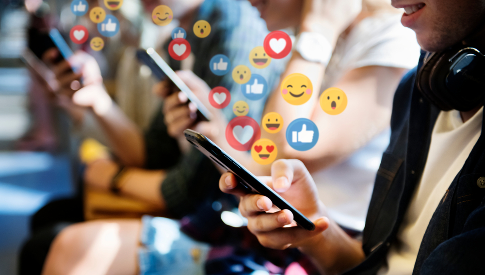
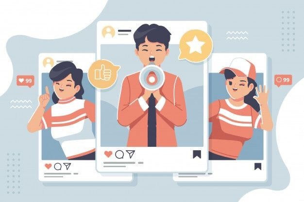
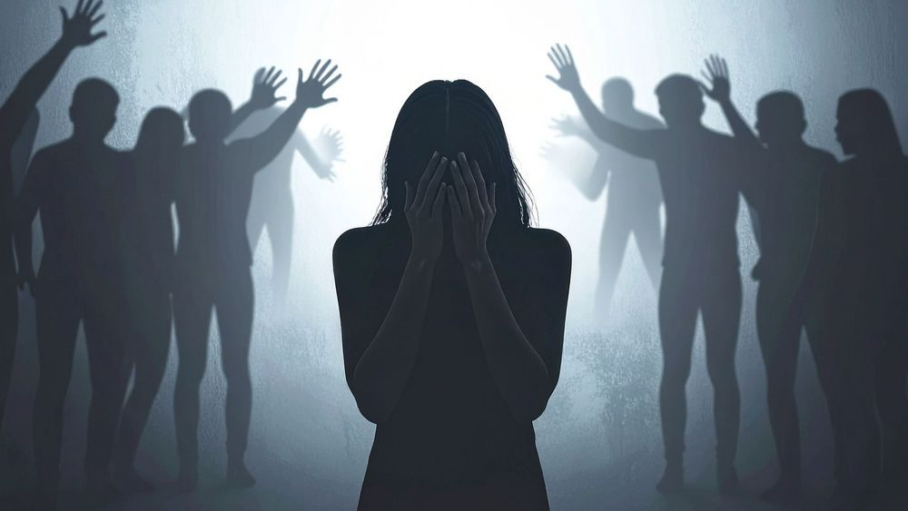
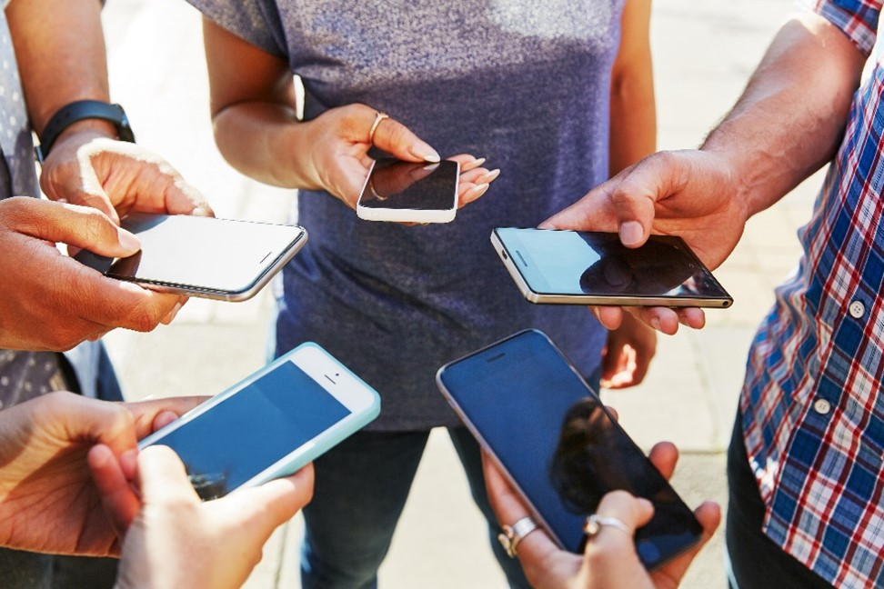

1. Influence of Social Media on Teenagers

Social media has a huge influence on adolescents, who are among its heaviest users and still developing emotionally. In the U.S., about 75% of teens have social networking profiles, with 68% using Facebook most. While these platforms help teens build connections and learn digital skills, they also expose them to risks like cyberbullying, sexting, and “Facebook depression,” as well as potential issues such as sleep deprivation, Internet addiction, and obesity.
Cyberbullying is a major concern, often fueled by anonymity and carried out by peers or friends. Around 32% of teens report experiencing online harassment, ranging from direct threatening messages to trolling. The effects can be severe, causing psychological distress or even leading victims to consider extreme measures. Sexting is another common risk, with 20% of teens participating and sharing sexually explicit messages or images, sometimes resulting in humiliation, trauma, or legal consequences.
“Facebook depression” occurs when teens constantly compare themselves to others online, though the effects vary depending on use. Studies show that social networks can either harm or improve well-being: connecting with others can boost happiness and trust, while comparing oneself to peers can lead to sadness or anxiety. Ultimately, social media’s impact on teens depends on whether it is used to foster genuine connection or constant comparison.
2. Bullying on Social Media

Cyberbullying is on the rise, and it’s hitting teens harder than ever. Anonymous messages, trolling, and mean comments can come from classmates, friends, or even strangers, and 32% of online teens say they’ve faced online harassment. While sending a nasty text may seem “easy” to the bully, the consequences for the victim are very real, ranging from emotional distress to serious mental health struggles.
Why do teens bully online? Experts say it’s often about power or fitting in. Some teens want to stay “popular” or feel in control, while others lash out because they feel excluded. Most victims (77%) know their bullies, meaning cyberbullying isn’t just faceless strangers, it’s people they see at school or hang out with.
Sexting and sharing inappropriate content is another risk tied to social media bullying. About 20% of teens admit to participating in sexting, and once something is online, it can be shared widely and permanently. This can lead to embarrassment, strained friendships, and even legal consequences in some cases, making online decisions more serious than many teens realize.
3. The Impact of Social Media on the Fear of Missing Out (FOMO)among Teenagers Aged between 18 and 25

Social media has changed how teens and young adults connect, but it also brings FOMO, or the “Fear of Missing Out.” This anxiety hits hardest when users see friends at events, parties, or outings and feel like they are missing out. Teens aged 18–25 are particularly affected, constantly checking Instagram, Facebook, and other platforms to stay in the loop.
FOMO is closely tied to social comparison. Seeing curated posts online can lead to stress, jealousy, and lower self-esteem, especially when comparing oneself to people perceived as having better lives. The more time teens spend online, the stronger the urge to stay connected, which can intensify anxiety and reduce life satisfaction, autonomy, and resilience.
This cycle of constant checking and comparing can become addictive. As teens scroll through feeds, they feel pressure to keep up with others’ activities, which drives even more social media use. The more they engage online, the greater the FOMO, creating a loop that can impact both mental health and daily productivity.
Experts say managing FOMO is possible with balance. Teens can take breaks from social media, focus on real-life interactions, and remember that online feeds are often just polished snapshots, not reality. By understanding this, young adults can protect their mental health, reduce stress, and enjoy life both online and offline.
4. The Impact of Social Media on Youth Fashion Consumption: Trends, Influencers, and Ethical Shifts
Social media isn’t just for scrolling. It is changing the way young people dress and shop. Platforms like Instagram, TikTok, and YouTube are now major sources of fashion inspiration, showing teens the latest trends and helping them express their personal style. With so many posts, videos, and stories, social media has become a virtual runway that influences what teens wear and how they engage with brands.
Influencers play a huge role in this shift. Popular content creators showcase outfits, review products, and even start viral fashion trends, giving young consumers real-time guidance on what is “in.” Teens don’t just follow trends. They interact with brands directly through comments, likes, and challenges, making fashion consumption a highly social experience.
Beyond style, social media is also pushing ethical and sustainable fashion into the spotlight. Young consumers are increasingly aware of the impact of their purchases, from eco-friendly materials to fair labor practices. Platforms provide a space for awareness campaigns and user-generated content that encourages responsible shopping, helping teens make choices that reflect both their style and values.
5. The Impact of Social Media on the Mental Health of Adolescents and Young Adults

Social media plays a big role in the daily lives of teens, but it isn’t always positive. Platforms like Instagram, TikTok, and Facebook keep teens constantly connected, yet excessive use can increase stress, anxiety, and depression. Privacy concerns, cyberbullying, and academic challenges also affect teenagers, showing the importance of promoting safe and mindful social media habits.
Experts note that social media can create a cycle of short-term relief but long-term problems. Teens often turn to scrolling or online interactions to escape stress or boredom, but spending too much time online can worsen sleep issues, feelings of loneliness, and mental strain. Passive browsing, just observing others’ posts, can increase self-comparison and negative emotions, while active engagement with friends and content may support social connections.
Adolescence is a sensitive period for social and emotional growth, making teens especially vulnerable. Negative online behaviors such as trolling, body-shaming, or posting harmful comments can lead to anxiety, depression, and even thoughts of self-harm. At the same time, social media can offer safe spaces for self-expression, connecting with peers, and accessing mental health resources when used responsibly.
To reduce these risks, families, schools, and teens themselves can take action. Strategies such as setting screen-time limits, encouiraging positive online interactions, and balancing digital and real-world activities can help teens enjoy the benefits of social media without harming their mental health.
6. Responsible Use of Social Media

Social media tells the world who you are, so it’s important to make sure your online story is a positive one. Every post, picture, or comment contributes to your online reputation, which can affect everything from friendships to future job opportunities. Even occasional users need to think carefully about what they share, because how you act online matters just as much as how you behave offline.
To create a positive presence, always post content that reflects your values, skills, and creativity. Avoid sharing anything that could seem unprofessional, mean, or questionable. A helpful tip is to use the 24-hour rule: wait a day before posting anything you are unsure about to see if it still feels appropriate. This can prevent mistakes and help maintain a strong reputation.
Protect your personal information by avoiding oversharing. Don’t post details like your address, school, or phone number, and consider disabling geotagging so strangers cannot track your location in real time. Posting content later, instead of immediately, can also help protect your privacy while still allowing you to share experiences with friends.
Lastly, be professional and take control of your content. Keep your profiles up to date, use proper grammar, and engage positively with others. Check your online presence regularly, and correct any inaccurate information. By following these steps, you can have fun on social media while maintaining a safe, positive, and professional online reputation.
6. Conclusion
In short, using social media responsibly helps teens create a positive online reputation. By thinking before posting, protecting personal information, and staying professional, they can enjoy self-expression while keeping themselves safe and opening doors to future opportunities.
Beyond personal safety, a positive online presence can influence how peers, teachers, and even potential employers perceive you. Every post, comment, or shared photo contributes to your digital story, so being mindful ensures that your online persona reflects your values, creativity, and personality in the best light.
Responsible social media use encourages balance and intentionality. Teens who set boundaries, engage positively, and reflect on their online behavior are better equipped to enjoy the benefits of social media—staying connected, learning, and expressing themselves without suffering negative consequences or regret.